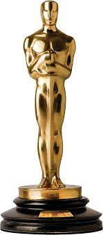

Omar Sy
Oscar winner

The Intouchables
Comedy/Drama
8.5/10

Charming French actor.
Omar Sy is a French actor and comedian, best known for his captivating performance in "The Intouchables." He brings charm, humor, and depth to his roles, leaving a lasting impact on audiences.

0 wins
0 nominations

Benedict Cumberbatch
Oscar winner
.png)
The Imitation Game
Historical drama
8/10
Deep bass-baritone voice
His voice has been creatively described by journalist Caitlin Moran as a "jaguar hiding in a cello".

0 wins
2 nominations

Keanu Reeves
Oscar winner

The Matrix
Sciene fiction
8.7/10
The one
Keanu is a man in the Goldilocks zone. He’s tall but not too tall; tough, but not overtly so. His fame is offset by a rather mysterious personal life.
0 wins
0 nominations

John Travolta
Oscar winner

From Paris with love
Action film
6.4/10
Versatile Hollywood legend
John Travolta is a versatile actor, dancer, and singer known for iconic roles in films like "Saturday Night Fever" and "Pulp Fiction," a Hollywood legend with captivating charisma.
0 wins
2 nominations

Robert Downey jr.
Oscar winner

Sherlock Holmes
Adventure/Mistery
7.6/10
Charismatic actor, iconic roles.
Robert Downey Jr. is a talented actor known for his charismatic performances in movies like "Iron Man," "Sherlock Holmes," and "Chaplin," with a remarkable journey of personal growth and success.
0 wins
2 nominations

Samy Naceri
Oscar winner

Taxi
Action/Comedy
7.0/10
Talented French actor.
Samy Naceri is a French actor celebrated for his role as Daniel Morales in the popular film series "Taxi." Despite facing personal challenges, he has showcased impressive acting skills and made a significant impact in the entertainment industry.
0 wins
0 nominations